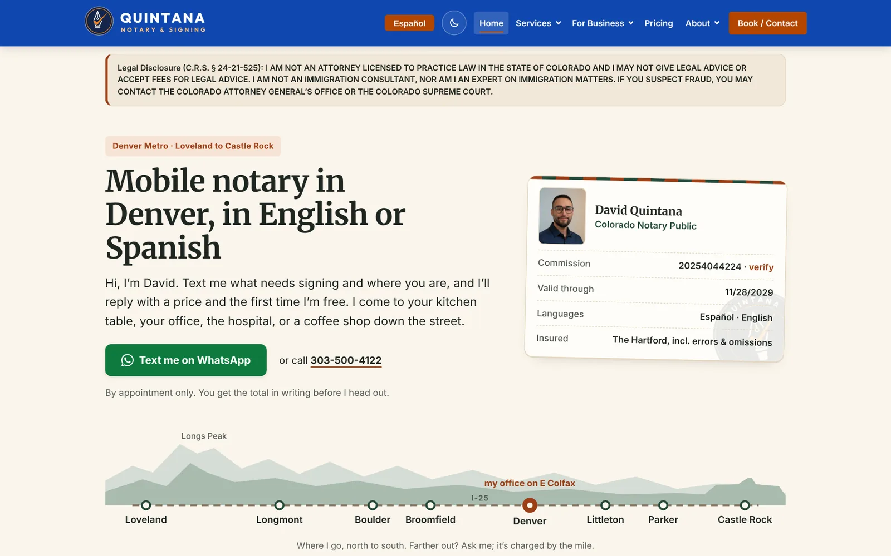
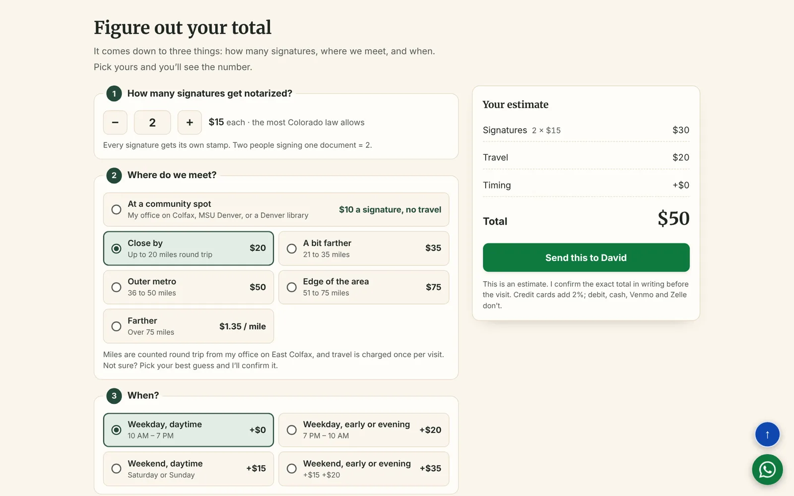
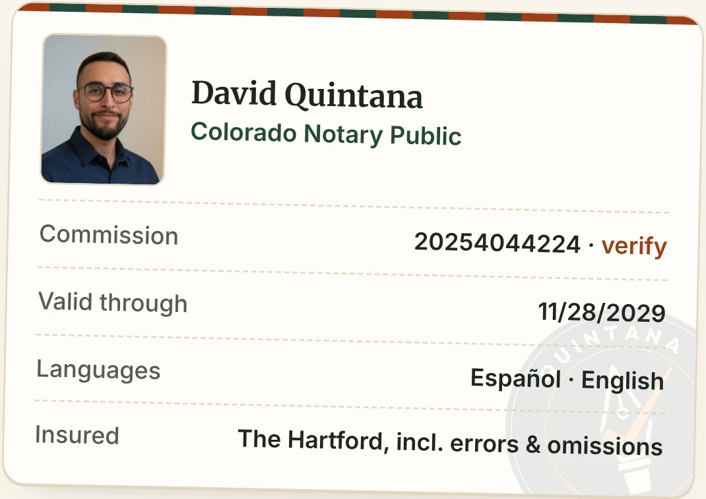
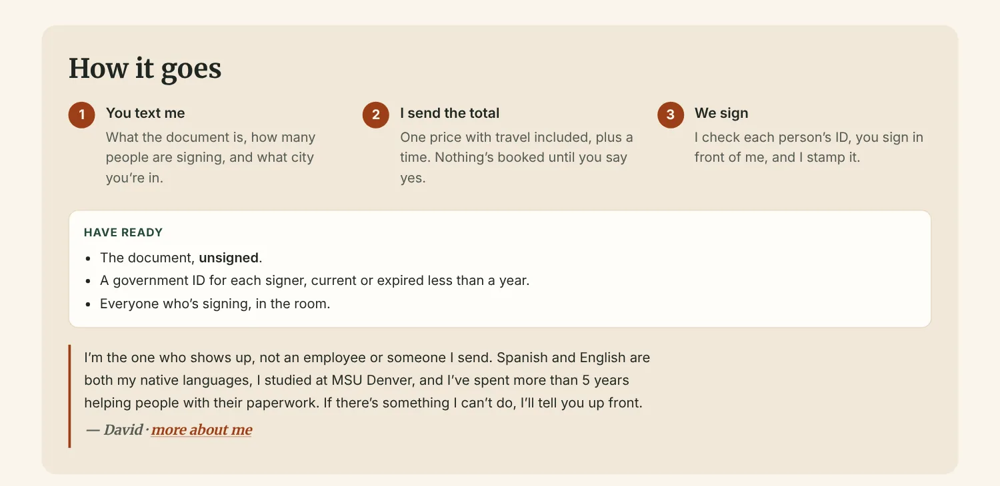
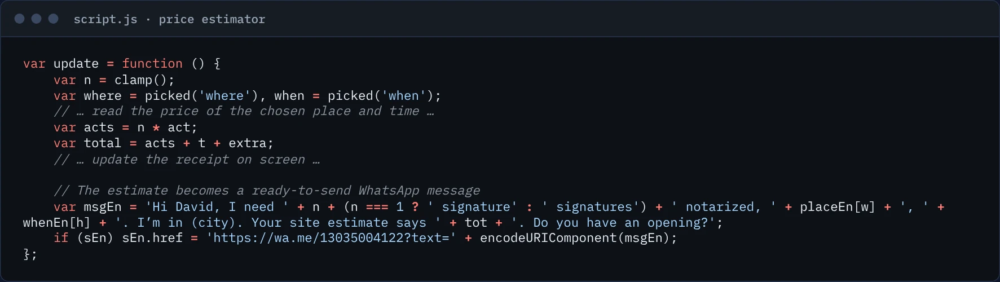
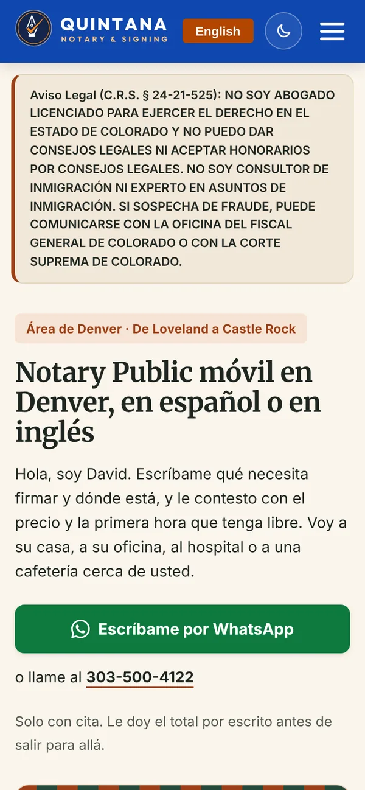
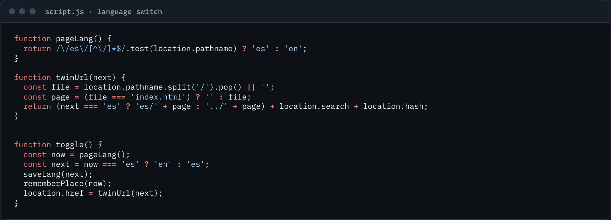

Client case study · Bilingual notary services
Caso de cliente · Servicios notariales bilingües
Quintana Notary & Signing: trust through transparent design
Quintana Notary & Signing: confianza a través del diseño transparente
How plain-language communication, mobile-first design, and front-and-center verification create a trustworthy digital presence for a mobile notary business.
Cómo la comunicación en lenguaje sencillo, el diseño móvil primero y la verificación visible crean una presencia digital confiable para un negocio notarial móvil.

Overview
Resumen
Purpose
Propósito
The official digital presence for my mobile notary business in Colorado: a platform that feels trustworthy, simple, and welcoming — especially for clients who aren't tech-savvy or familiar with legal terminology.
La presencia digital oficial de mi negocio de servicios notariales móviles en Colorado: una plataforma confiable, simple y acogedora — especialmente para clientes que no son expertos en tecnología ni conocen la terminología legal.
Goals
Objetivos
Build immediate trust through transparent verification, explain services in everyday language, ensure full mobile usability for older adults and busy families, support English and Spanish, and reduce confusion and unnecessary phone calls.
Generar confianza inmediata con verificación transparente, explicar los servicios en lenguaje cotidiano, garantizar usabilidad móvil para adultos mayores y familias ocupadas, ofrecer inglés y español, y reducir la confusión y las llamadas innecesarias.
Design decisions
Decisiones de diseño

A price estimator instead of a price list
Una calculadora en lugar de una lista de precios
The most common question is "how much will it cost?", and the answer depends on three things. The homepage asks exactly those and shows the total as you choose.
- How many signatures: $15 each, the most Colorado law allows
- Where we meet: a community spot with no travel fee, or travel priced by distance
- When: weekday, evening or weekend
One button turns the estimate into a ready-to-send WhatsApp message, so the client never has to explain it again.
La pregunta más común es "¿cuánto me va a costar?", y la respuesta depende de tres cosas. La página principal pregunta justo eso y muestra el total mientras el cliente elige.
- Cuántas firmas: $15 cada una, lo máximo que permite la ley de Colorado
- Dónde nos vemos: un lugar comunitario sin costo de viaje, o viaje según la distancia
- Cuándo: entre semana, de noche o en fin de semana
Un botón convierte el estimado en un mensaje de WhatsApp listo para enviar, así el cliente no tiene que explicarlo otra vez.

Credentials before the sales pitch
Credenciales antes que la venta
The first screen shows an ID-style card with my photo, commission number, the date it's valid through, the languages I work in and my insurer. The "verify" link goes straight to the Colorado Secretary of State's notary search.
- Most notary sites bury or leave out verification details
- Clients can check my commission in seconds
- Proof of legitimacy appears before any sales copy
La primera pantalla muestra una tarjeta tipo identificación con mi foto, número de comisión, fecha de vigencia, los idiomas en que trabajo y mi aseguradora. El enlace "verify" lleva directo a la búsqueda de notarios de la Secretaría de Estado de Colorado.
- La mayoría de sitios notariales ocultan u omiten la verificación
- Los clientes pueden revisar mi comisión en segundos
- La prueba de legitimidad aparece antes que cualquier texto de venta


One way to book, on every page
Una sola forma de agendar, en cada página
Every page leads to the same simple path: text me what the document is and where you are, I send one total with travel included, and we sign. Nothing is booked until the client says yes. A short "have ready" list (the unsigned document, a valid ID for each signer, everyone in the room) prevents wasted trips.
Cada página lleva al mismo camino sencillo: me escribe qué documento es y dónde está, le mando un total con el viaje incluido y firmamos. No se agenda nada hasta que el cliente dice que sí. Una lista corta de "qué tener listo" (el documento sin firmar, una identificación válida para cada firmante y todos presentes) evita viajes perdidos.


Mobile-first, with real Spanish pages
Móvil primero, con páginas reales en español
Most clients look up a notary on their phone, so every layout starts at phone size: one column, large buttons, and the WhatsApp button right under the headline.
Every page exists in full in English and in Spanish (under /es/), so search engines can find each language on its own. The language button jumps to the matching page, remembers the choice with localStorage, and keeps the reader's place on the page.
La mayoría de los clientes buscan un notario desde el celular, así que cada diseño empieza en tamaño de teléfono: una columna, botones grandes y el botón de WhatsApp justo debajo del titular.
Cada página existe completa en inglés y en español (en /es/), para que los buscadores encuentren cada idioma por separado. El botón de idioma lleva a la página equivalente, recuerda la elección con localStorage y mantiene el lugar del lector en la página.
A warm, local palette
Una paleta cálida y local
The navy header keeps the brand's authority. Below it, warm paper, clay and pine, with mountains along the bottom of the homepage, make the site feel like a local neighbor rather than a call center. Green is used for WhatsApp and orange for booking, so the next step is always obvious.
El encabezado azul marino mantiene la autoridad de la marca. Debajo, tonos de papel cálido, arcilla y pino, con montañas al pie de la portada, hacen que el sitio se sienta como un vecino y no como un centro de llamadas. El verde se usa para WhatsApp y el naranja para agendar, así el siguiente paso siempre es claro.
NavyMarino#0F47AFBrand & authorityMarca y autoridad
PaperPapel#FAF5ECWarm backgroundFondo cálido
ClayArcilla#9C3F17Accents & step numbersAcentos y números de pasos
PinePino#24493AHeadings & calmTítulos y calma
OrangeNaranja#D65600Booking buttonsBotones para agendar